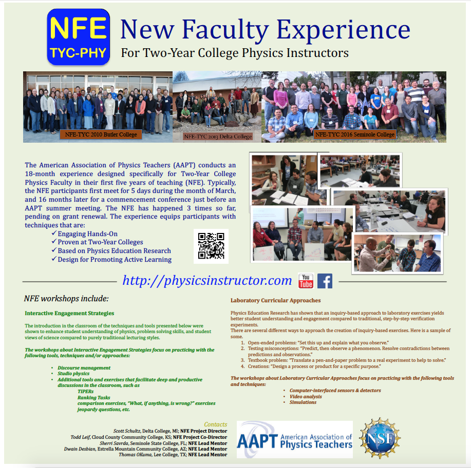
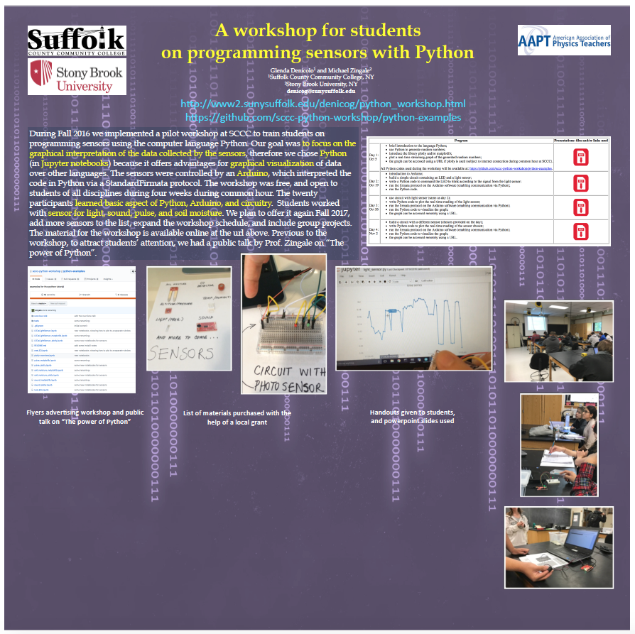
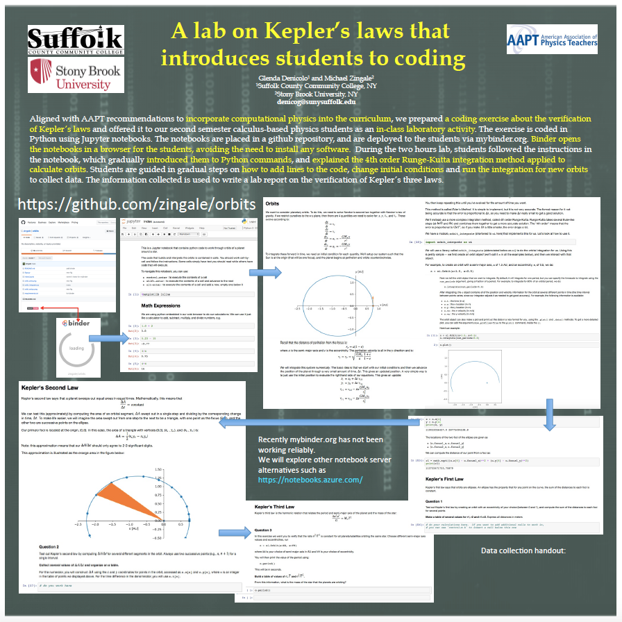
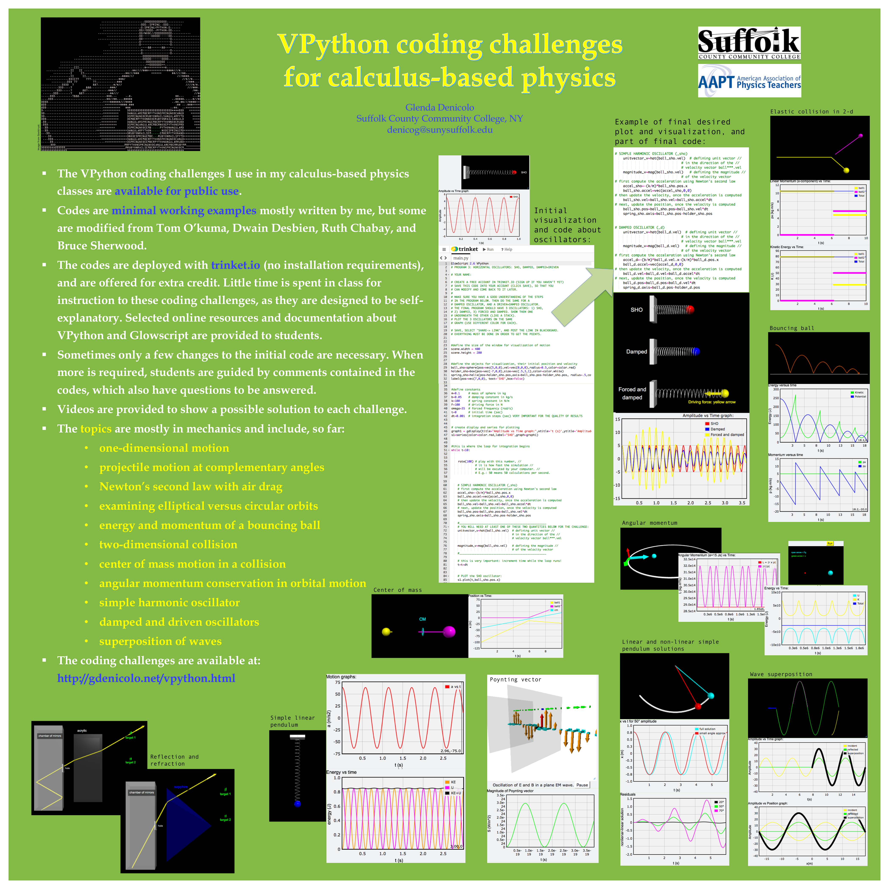

American Association of Physics Teachers (AAPT) & related

Committee on Physics in Two-Year College (TYC)
My lastest letter of reappointment to the TYC committee at the AAPT (2015-2020).
Letter of appointment as vice-chair of the TYC committee at the AAPT (2019-2020).
Website of the New Faculty Experience (NFE) for TYC Physics Instructors.
The first TYC day happened at the San Diego AAPT meeting, January 2018:
TYC faculty who have never attended a national AAPT meeting is able to
receive a discounted one day registration fee of $85 (as of 2019).
This is a copy of my 2019 article on The Physics Teacher entitled: "Assessing Program Learning Outcomes: A Tale of Self-Discovery".
Some
Seeking employment: teaching at a two-year college by Scott SchultzSome thoughts on teaching at a community college by Tom O'KumaSuccessful STEM student pathways: a two- and four-year partnership by Charles J De LeoneBreaking the myth of the "non-traditional" physicist by Crystal Bailey
| Posters I presented at AAPT meetings | |||
| Jul 2014 (Minneapolis, MN) | Jan 2015 (San Diego, CA) | Jul 2015 (College Park, MD) | |
 |
 |
 |
|
| Jul 2016 (Sacramento, CA) | Jul 2017 (Cincinnati, OH) | ||
 |
 |  | |
| Jul 2018 (Washington, DC) | Jul 2019 (Provo, UT) | Jan 2020 (Orlando, FL) | |
|  | No poster here, but I organized a session on "Physics of digital games" |
||
Disclaimer: Any opinions, findings, conclusions or recomendations expressed in this website are those of the author and do not necessarily reflect the views of Suffolk County Community College.
Icons made by Freepik from www.flaticon.com are licensed by CC 3.0 BY; other icons are by fontawesome.com.
Html template by pixelarity.com